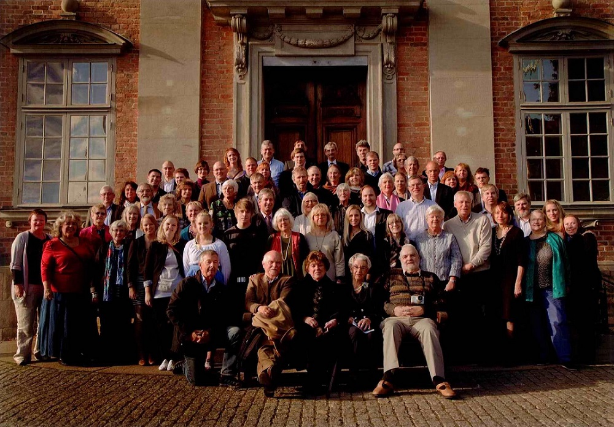

Släktföreningen
Släktföreningen Breitholtz bildades 1950 med syfte att stärka familjebanden mellan släktens medlemmar, vårda släktminnen och stödja forskning och information om släktens historia. Som ett led i denna ambition finns denna hemsida med material i skrift och bild som kan vara av intresse för ättens medlemmar och alla andra som av olika anledningar vill fördjupa sig i vår släkts historia och tradition.
Medlemsskap
Medlemsskap i släktföreningen kan enligt stadgarna sökas av den som tillhör ätten eller är barn till kvinnlig ättemedlem. Medlemsavgiften är för närvarande 100 kr per person och år. För livstidsmedlemskap görs en inbetalning av 20 årsavgifter. Inbetalning görs till föreningens bankgiro 5038-0310.
Stipendier
Släktföreningen har instiftat ett stipendium som är möjligt att sökas av medlemmar oavsett ålder. Inriktningen på stipendiet är att göra något möjligt att prova och lära sig nya saker. Det kan till exempel vara ett extra stöd vid studier utomlands eller att efter flera år i ett yrke omskola sig. Resultatet ska sedan redovisas antingen skriftligt så att det kan delas med medlemmarna, eller presenteras på nästkommande släktmöte. Ansökan ska var styrelsen till handa senast 2023-03-31 och innehålla motivering, önskat belopp och hur resultatet redovisas.
Släktträffar
Släktföreningen arrangerar släktmöten var femte år. Det senaste hölls den 10 september 2021 på Riddarhuset och nästa möte är bokat till den 23 maj 2025. Tidigare släktmöten har kombinerats med utflykter till platser med anknytning till släkten, bland annat i Uppland, Södermanland, Östergötland och Småland samt Estland. Mellan släktmöten arrangeras i mån av intresse mindre träffar och studieresor till platser med släktanknytning.
Bilder på släktföreningen
